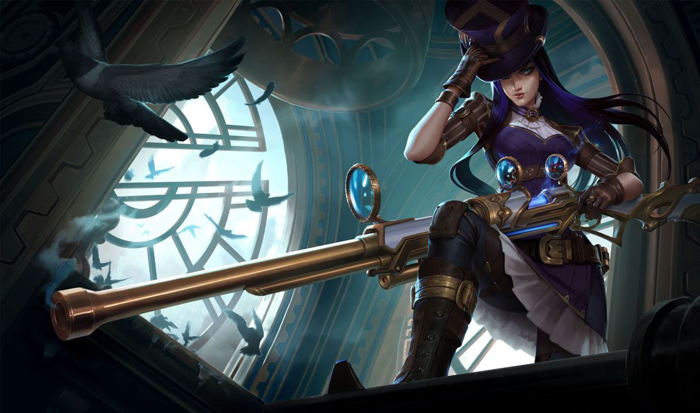

케이틀린
케이틀린
케이틀린, 필트오버의 보안관
Caitlyn, the Sheriff of Piltover

1. 배경
2. 스킬
2.1. 패시브 - 헤드샷(Headshot)
헤드샷은 물리 피해를 추가로 입힙니다. 요들잡이 덫에 적중한 적을 대상으로 할 때는 사거리가 두 배로 늘어나고 물리 피해 역시 추가됩니다. 90구경 투망에 적중한 적을 대상으로 할 때는 사거리만 두 배로 늘어납니다.
헤드샷 피해량은 레벨, 치명타 확률, 치명타 피해량에 비례합니다.
헤드샷은 챔피언이 아닌 유닛에게 물리 피해를 추가로 입힙니다.
덫에 걸린 대상이 추가로 입는 피해는 요들잡이 덫 스킬 레벨에 비례합니다.
2.2. Q - 필트오버 피스메이커(Piltover Peacemaker)
요들잡이 덫 때문에 위치가 드러난 적은 항상 100%의 피해를 입습니다.
2.3. W - 요들잡이 덫(Yordle Snap Trap)
2.4. E - 90구경 투망(90 Caliber Net)
2.4. R - 비장의 한 발(Ace in the Hole)
3. 장점
우월한 교전 사거리를 통한 우수한 초반 견제&압박 능력
뛰어난 스노우볼링
뛰어난 압박 능력
막강한 후반 캐리력
직관적이고 조작하기 쉬운 스킬셋
요들잡이 덫(W)의 변수 차단 및 CC기 연계
이론상 압도적인 피해량의 장거리 풀콤보
4. 단점
극단적인 라인 푸시 의존도
굼뜬 시전 스킬과 이로 인한 스킬 사용 시의 딜로스
심각한 아이템 의존도와 낮은 탱커 처리력
입문은 쉽지만 통달은 어려움

저작물은 CC BY-NC-SA 2.0 KR에 따라 이용할 수 있습니다. (단, 라이선스가 명시된 일부 문서 및 삽화 제외)